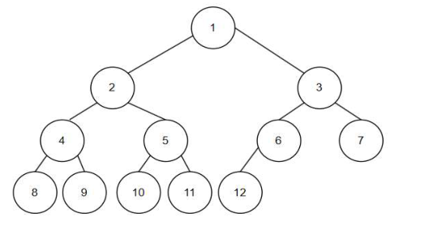
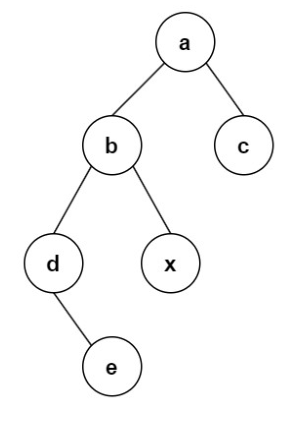
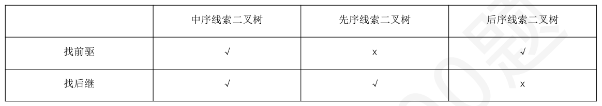
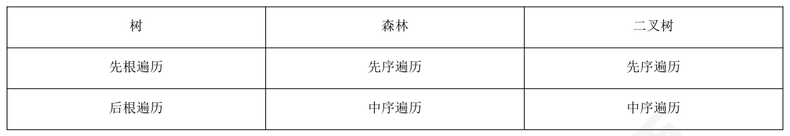

第 31 题
一棵二叉排序树的后序遍历序列是15,10,23,25,20,35,42,39,30。请给出这棵树的前序遍历序列 （）
A． 30.20.15.10.23.25.39.35,42 B． 30,20,10,15,23,25,39,35,42 C． 30.20.10.15.25.23.39.35.42 D． 30.20.10.15.23.25.35.39.42 答案与解析 答案：C
二叉排序树的中序遍历为有序序列10.15.20.23.25.30.35.39.42。而题目给出了后序15.10,23.25.20.35.42.39.30。因此可以构建唯一一棵二叉树，前序遍历为遍历序列30.20.10.15.25.23.39.35.42。
教材第 22 页 第 32 题
下列关于二叉树的遍历的陈述中，正确的是（ ）。
A． Ⅲ、Ⅳ B． Ⅱ、Ⅲ、Ⅳ C． Ⅱ、Ⅲ D． Ⅳ 答案与解析 答案：A
Ⅰ错误，任一二叉树的叶结点在先序、中序、后序遍历序列中相对位置一定是相同的。Ⅱ错误，要交换二叉树的所有分支结点的左右子树的位置，利用前序或后序遍历框架解决最合适， 𝑛𝐶2𝑛只要保证先处理好左右子树，再处理根结点的思路就行。Ⅲ正确，含有n 个结点的二叉树最多有𝑛+1 种 形态。Ⅳ正确，NLR 和LNR 顺序相反，说明对于每一层的L，N，R，中L 为空或R 为空，得到的树的结果就是该二叉树仅有一个叶子结点。
教材第 22 页 第 33 题
在二叉树的前序序列、中序序列和后序序列中，所有叶结点的先后顺序（ ）。
A． 都不相同 B． 完全相同 C． 前序和中序相同，而与后序不同 D． 中序和后序相同，而与前序不同 答案与解析 答案：B
三种遍历分别是“根左右”，“左根右”，“左右根”，所以只有分支结点之间顺序有差异，叶子节点都是从左到右按顺序排放的。
教材第 22 页 第 34 题
某二叉树的先序遍历序列和后序遍历序列正好相反，则关于该二叉树一定是（ ）
A． 空或只有一个结点 B． 该二叉树转成森林，每棵树只有一个根节点 C． 度为1 的树 D． 高度等于其结点数 答案与解析 答案：D
由题可知，该二叉树只可能是左单链或右单链，故答案选D。
教材第 22 页 第 35 题
某二叉树的中序遍历序列和后序遍历序列正好相同，则关于该二叉树一定是（ ）
A． 空树或任一结点没有左子树 B． 空树或任一结点没有右子树 C． 空树或每个结点的度为1 D． 空树或满二叉树 答案与解析 答案：B
中序是“左根右”，后序是“左右根”，因为根（分支结点）是不可或缺的。所以考虑减去左子树或者右子树保证他们是一致的。如果没有左子树，那么中序是“根右”，后序是“右根”，两个相反；没有右子树，中序是“左根”，后序也是“左根”
教材第 22 页 第 36 题
一棵完全二叉树的中序遍历序列为1,2,3,4,5,6,7，那么其先序遍历为（ ）
A． 4,2,1,3,6,5,7 B． 4,2,6,1,3,5,7 C． 1,3,2,5,7,6,4 D． 7,6,5,4,3,2,1 答案与解析 答案：A
元素个数确定，完全二叉树的树型也是确定，可以知道是一棵高度为3 的满二叉树，再按中序遍历将元素值依次填到各个结点，然后写出先序序列，可以知道答案为A。
教材第 22 页 第 37 题
若一棵二叉树的先序遍历序列为a,e,b,d,c，后序遍历序列为b,c,d,e,a，则下列说法错误的是 （）
A． 根节点只有一个孩子 B． 度为2 的结点只有一个 C． b 一定是e 的左孩子 D． c 一定是d 的左孩子 答案与解析 答案：D
首先分析根结点孩子的情况，因为先序序列是a，e，后序结尾是e，a，那么有几种情况：①若根结点有左孩子。那么e 一定是左孩子，且一定没有右孩子（否则右孩子结点后序一定夹在e，a 之间，不符合题意）②若根节点没有左孩子。那么e 一定是右孩子。因此根节点只有一个孩子，A 选项正确。既然根只有一个孩子，那么可以不考虑根a 了，只考虑以e 为根的子树。先序为e, b, d, c，后序是b, c, d, e，可以观察在先序中，b 在e 后面，那么只可能b 为e 的左孩子（反证法：如果b 是右孩子，那么由前序e，b 相邻可推一定没有左子树，但是后序结尾一定是b，e，但题目是d，e，可知此情况不符合题意）。由于后序中b 在最前面，所以b 一定没有孩子（那么e 的左子树只有b 一个结点）。最后只剩一下一个结点c 了，可知c 在d 的左右皆可。综上，B 正确，该度为2 的结点为e。C 正确。D 选择，c 在d 左右皆可。由上面分析，此题有4 种树型，e 居a 左右皆可（2 种），c 在d 左右皆可（2 种），两者独立，所以总树型2*2=4。大家看到这里应该也能很轻松画出来。这题是真题改编，做到这里也算把这道题目研究到位了，希望大家体会这种逐帧分析的思维过程。
教材第 22 页 第 38 题
任何一棵二叉树的叶子结点在先序、中序和后序遍历序列中的相对次序（ ）
A． 不发生改变 B． 发生改变 C． 不能确定 D． 以上都不对 答案与解析 答案：A
在先序、中序和后序遍历序列中叶子结点总是从左向右的。
教材第 23 页 第 39 题
设结点x 和结点y 是二叉树T 中的任意两个结点，若在先序序列中x 在y 之前，而在后序序列中x 在y 之后，则x 和y 的关系是（ ）
A． x 是y 的左兄弟 B． x 是y 的右兄弟 C． x 是y 的祖先 D． x 是y 的后代 答案与解析 答案：C
先序遍历(根、左、右)：首先访问根结点，然后遍历左子树，最后遍历右子树。后序遍历(左、右、根)：首先遍历左子树，然后遍历右子树，最后访问根结点。假设存在一个结点z 把x、y 分居z 两侧，由先序遍历可知，x 在z 的左子树，y 在z 的右子树，那么在后序遍历中，x 一定也在y 前面，与题意不符。因此不存在这样的z，即x、y 一定同时是根节点到他们各自的路径上的中间结点，即x 是y 的祖先。
教材第 23 页 第 40 题
队列常用于二叉树的层序遍历，下列二叉树的层序遍历中，队列空间的大小至少是（ ）

A． 4 B． 5 C． 6 D． 7 答案与解析 答案：C
当5 出队的时候，此时队列里面有6、7、8、9、10、11 一共6 个元素，所以队列空间的最小值是6。
教材第 23 页 第 41 题
在下列叙述中，正确的叙述是（ ）
A． 树的先序遍历和中序遍历可以得到树的后遍历 B． 将一棵树转换成二叉树后，根结点没有右子树 C． 采用二叉链表作存储结构，树的先序遍历和其相应的二叉树的先序遍历的结果不同 D． 一棵树中的叶子结点数一定等于与其对应的二叉树的叶子结点数 答案与解析 答案：B
A 错误，树的遍历中，没有中序遍历的概念；对于B，树转换为二叉树时，结点的左孩子是它在树中的第一个孩子，右孩子是它在树中的兄弟，而根结点不存在兄弟结点的概念，必然没有右子树； C 错误，树的先序遍历就是相应二叉树的先序遍历； D 错误，当树中的叶结点有兄弟结点时，转换后它就有右孩子了，而不再是叶子结点。
教材第 23 页 第 42 题
一棵具有n 个非叶子结点完全二叉树的线索树，含有（ ）条线索
A． 2n+1 或2n B． 2n+2 或2n+1 C． 2n+1 或2n-1 D． 2n+2 或2n-2 答案与解析 答案：B
完全二叉树中度为1 的结点数为0 或1。当n1=0 时，有n2=n, no=n+1，共2(n+1) 个空指针作线索。当n1=1 时，有n2=n-1, no=n，共2n+1 个空指针作线索。
教材第 23 页 第 43 题
判断线索二叉树中*p 结点有右孩子结点的条件是（ ）。
A． p != NULL B． p->rchild!=NULL C． p->rtag==0 D． p->rtag==1 答案与解析 答案：C
根据线索二叉树的定义，rtag=0 表示有右孩子，rtag=1 表示没有有孩子，右指针表示的是后继的线索。
教材第 23 页 第 44 题
知一棵二叉树的后序序列为DABEC，中序序列为DEBAC，则其对应的二叉树的先序线索二叉树中，右指针为线索（）的结点有（）个。
A． 1 B． 2 C． 3 D． 4 答案与解析 答案：C
中序+后序可以确定一棵唯一的二叉树，如下图所示，右孩子为空的结点在线索二叉树中，右孩子指针指向线索。由图可知有CDA 三个。
教材第 23 页 第 45 题
下列关于线索二叉树，说法不正确的是（ ）
A． 在中序线索二叉树中，若某结点有右孩子，那么其后继结点一定它右子树的最左下结点 B． 在先序线索二叉树中，若某结点有左孩子，那么可能无法通过该结点的指针找到他的前驱结点 C． 线索二叉树中，若总结点数为n，那么表示线索的指针有n+1 个 D． 在后序线索二叉树中，若一个非根结点没有右孩子，那么它的右指针一定指向其父亲结点 答案与解析 答案：D
D 选项错误，若该非根结点是其父亲结点的左孩子，且存在右孩子，那么右指针一定指向右孩子所在子树后序遍历的第一个结点。 B 正确，先序线索二叉树可能无法直接找到前驱，后序线索二叉树可能无法直接找到后继，需要通过从头遍历或者三叉链表（多一个指针指向父亲结点）找到。
教材第 23 页 第 46 题
二叉树在线索化后，仍不能有效求解的问题是（ ）。
A． 先序线索二叉树中求先序后继 B． 中序线索二叉树中求中序后继 C． 中序线索二叉树中求中序前驱 D． 后序线索二叉树中求后序后继 答案与解析 答案：D
后序线索二叉树不能有效解决求后序后继的问题。如下图所示，结点E 的右指针指向右孩子，而在后序序列中E 的后继结点为B，在查找E 的后继时仍然只能按常规方法来查找。注意：先序线索二叉树中求前驱也是不能有效求解
教材第 23 页 第 47 题
若对以下二叉树进行后序线索化，则结点x 的左、右线索分别指向（ ）

A． e, a B． d, b C． e, b D． b, c 答案与解析 答案：B
后序遍历序列为e，d，x，b，c，a，左右线索分别指向x 的后序前驱d 和后继b，因此答案选B。
教材第 24 页 第 48 题
（ ）的遍历仍需要栈的支持。
A． 前序线索树 B． 中序线索树 C． 后序线索树 D． 所有线索树 答案与解析 答案：C
先序线索二叉树的缺点：无法找到先序序列中某结点的前驱；后序线索二叉树的缺点：无法找到后序序列中某结点的后继。如图，后序线索树只能找前驱，6 的后继为7，但6 的两个指针域中一个指向了它的前驱5，一个指向了4，故无法找到其后继，需要借助其他工具（如栈）帮助完成。

教材第 24 页 第 49 题
下列说法错误的是（ ）。
A． 若一棵二叉排序树中一个结点有两个孩子，则它的中序后继结点没有左孩子，它的中序前驱结点没有右孩子 B． 若二叉排序树中一个结点x 的右子树为空，且x 有一个后继y，则y 一定是x 的祖先，且其左孩子也是x 的祖先（结点本身也视为自己的一个祖先） C． 中序线索树中，从最左边的结点开始不断地查找右线索，不一定能遍历树内所有的结点 D． 若x 是二叉排序树的叶结点，y 是其父结点，那么y 的数值要么是树中大于x 的数值的最小关键字，要么是树中小于x 的数值的最大关键字 答案与解析 答案：C
A 正确，该结点的中序后继结点是它的右子树的最左边的结点，所以它没有左孩子。它的中序前驱结点是它的左子树的最右边的结点，所以它没有右孩子。B 正确，可以通过具体的例子来验证该结论。C 错误，该说法等价于从BST 中的最小值结点处不断地寻找后继结点，显然如此可以遍历树中所有的结点。D 正确，因为x 是一个根结点，x 要么是y 的右孩子（y 在x 的左边，y 的数值比x 的小），要么是y 的右孩子（y 在x 的右边，y 的数值比x 的大），又因为x 没有左子树和右子树，所以y 即是x 的前驱或后继的结点。即y 的数值要么是树中大于x 的数值的最小关键字，要么是树中小于x，数值的最大关键字。
教材第 24 页 第 50 题
下列说法正确的是（ ）
A． 在二叉树中，具有两个孩子的双亲节点，在中序遍历序列中，它的后继节点（后继节点是指中序遍历序列中排在某节点之后的节点）中最多只能有一个孩子节点。 B． 在二叉树中，具有一个孩子的双亲节点，在中序遍历序列中，它没有后继孩子节点 C． 已知二叉树的先序遍历和后序遍历并不能唯一地确定这棵树，因为不知道树的根节点是哪一个 D． 将一棵树转换成二叉树后，根节点没有左子树 答案与解析 答案：A
B：如果仅有右孩子，则中序形式为：根、右，此时后继节点存在。 C：先序与后序的形式分别是根、左、右和左、右、根，根据这两种遍历序列的信息无法区分左、右子树。D：通常有左子树而无右子树。
教材第 24 页 第 51 题
设某树的孩子兄弟链表示中共有6 个空的左指针域、7 个空的右指针域，包括5 个结点的左、右指针域都为空，则该树中叶结点的个数是（）。
A． 7 B． 6 C． 5 D． 不能确定 答案与解析 答案：B
在树的孩子兄弟表示法中，若一个结点没有孩子(即叶结点)，则表现为该结点的左指针域为空，因此本题答案为“6”。至于“5个结点的左、右指针域都为空”，表示树中有5 个结点既没有孩子又没有兄弟，约束条件比题中的“求叶结点的个数”要求更严格。
教材第 24 页 第 52 题
下列关于森林与二叉树的转换，说法错误的是（ ）
A． 二叉树中没有右孩子的结点个数为原森林中分支结点的个数+1 B． 当且仅当森林只有一棵树时，二叉树的分支数和原森林的分支数相同 C． 森林的中的叶子结点数量等于二叉树中空左指针数量。 D． 二叉树中，某个结点的左右孩子在原森林中一定是叔侄关系。 答案与解析 答案：D
A 正确，原森林中每一个分支结点产生唯一一个对应二叉树中没有右孩子的结点，且这个结点是原森林中这个分支节点最右边的孩子（左孩子右兄弟，最右边的孩子没有右兄弟，所以对应二叉树中右指针为空），森林中最右边子树的根节点在二叉树中也没有右孩子，这1 个是特殊的。由此可以知道原森林中分支节点个数+1=二叉树中没有右孩子的节点数量。 B 正确，森林左孩子右兄弟转换中，在二叉树中只有每棵树的根节点相连接的分支是比原森林多出来，所以当树为1 棵时，没有多余的分支多出。 C 正确，“左孩子右兄弟”，二叉树中没有左孩子的结点即原森林中的叶子节点。 D 错误，若二叉树中该结点是根节点，那么它的左右孩子不存在亲缘关系。
教材第 24 页 第 53 题
已知二叉树T 的顺序存储为{1, 10, 6, 3, 2, 22, 4, -1, -1, -1, -1, -1, 5, -1, 8}（-1 代表空结点），那么二叉树T 对应的森林F 的先根遍历序列为（ ）
A． 3, 10, 1, 2, 22, 6, 5, 4, 8 B． 1, 10, 3, 2, 6, 22, 5, 4, 8 C． 1, 10, 2, 3, 6, 22, 5, 4, 8 D． 1, 2, 10, 3, 6, 22, 5, 4, 8 答案与解析 答案：B
F 的先根遍历对应T 的先序遍历，所以画出T 的图即可得到答案为B。
教材第 25 页 第 54 题
一棵二叉排序树的层序遍历序列是30,20,39,10,23,35,42,15,25。这棵二叉树转换成的树/森林的后根遍历为（）
A． 10,15,25,23,20,35,42,39,30 B． 30,20,10,15,23,25,39,35,42 C． 15,10,23,25,20,35,42,39,30 D． 10,15,20,23,25,30,35,39,42 答案与解析 答案：D
二叉排序树的中序遍历为有序序列10, 15, 20, 23, 25, 30, 35, 39, 42。二叉树转换的森林的后根遍历对应二叉树的中序遍历，故答案为D。也可尝试层序+中序构造一棵二叉树可知B 为先序，C 为后序，不过稍显复杂。
教材第 25 页 第 55 题
若T'是由有序树T 转换而来的二叉树，则T 中结点的后根序列就是T'中结点的（ ）序列。
A． 先序 B． 中序 C． 后序 D． 层序 答案与解析 答案：B
树和森林的遍历与二叉树遍历的对应关系

教材第 25 页 第 56 题
如果用孩子兄弟链来表示一棵具有n(n>1)个节点的树，则在该存储结构中（ ）
A． 至多有n-1 个非空的右指针域 B． 至少有两个空的右指针域 C． 至少有两个非空的左指针域 D． 至多有n-1 个空的右指针域 答案与解析 答案：B
该树至少有两个节点，对于有两个或两个以上节点的树，至少有两个节点没有右兄弟(根节点和其最右孩子节点)，而右指针域指向兄弟节点。所以本题答案为B。
教材第 25 页 第 57 题
如果森林F 采用“孩子-兄弟”表示法对应的二叉树是16 个结点的完全二叉树，问：森林F 中树的数目和最大树的结点个数分别为（）。
A． 2 和8 B． 2 和9 C． 4 和8 D． 4 和9 答案与解析 答案：D
画出图像如右发现根结点一直向右走直到叶结点的路径上，共有3 个结点，所以森林中一共有4 棵树，其中最大的那棵树是森林的第1 棵树，共有9 个结点。
教材第 25 页 第 58 题
设森林F 中有3 棵树，第一、第二、第三棵树的结点个数分别为𝑀1 ，𝑀2 和𝑀3 。将森林F 转换成对应的二叉树T，若以第一棵树的根结点作为T 的根结点，则T 的根结点的右子树上的结点个数是 （）
A． 𝑀1 B． 𝑀1 + 𝑀3 C． 𝑀3 D． 𝑀2 + 𝑀3 答案与解析 答案：D
将森林转换成二叉树方法是“左孩子右兄弟”。森林中每棵树都相互独立，可将每棵树的根结点全部视作兄弟。题目内的森林转换后，树2 作为树1 的根结点的右子树，树3 作为树2的根结点的右子树。森林F 对应二叉树根结点的右子树上的结点个数是M_{2} + M_{3}。
教材第 25 页 第 59 题
采用双亲表示法描述一棵树，则具有n 个结点的树至少需要（ ）个指向双亲的指针。
A． n B． n - 2 C． n - 1 D． 2n 答案与解析 答案：C
每个指向双亲的指针都对应树中的一个分支，含有n 个结点的树中最少有n - 1 个分支。
教材第 25 页 第 60 题
若某个森林转换的二叉树是一棵高度为h 的满二叉树，那么关于原森林说法错误的是（ ）
A． 有h 棵树 B． 分支结点有2ℎ−1 −1 C． 第i 棵树的结点个数是2ℎ−𝑖 D． 第i 棵树的度为h-i-1 答案与解析 答案：D
A 正确，森林中有多少棵树，要看根节点开始往右遍历一共有多少个结点，高h 的满二叉树有h个，所以有h 棵树。 B 正确，原森林中每一个分支结点产生唯一一个对应二叉树中没有右孩子的结点，且这个结点是原森林中这个分支节点最右边的孩子（左孩子右兄弟，最右边的孩子没有兄弟，所以对应二叉树中右指针为空），森林中最右边子树的根节点本身也没有右孩子，这个是特殊的，由此可以知道原森林中分支节点个数+1=二叉树中没有右孩子的节点数量。满二叉树没有右孩子的节点数量即最后一排的叶子节点2ℎ−1 个，减去1 即为原森林中的分支结点数。 C 正确，第i 棵树对应的二叉树中的部分是根（根为第1 个）的第i 个右分支作为根节点，加上一个高度为h-i 的满二叉树，所以总结点个数是2ℎ−𝑖 −1 + 1 =2ℎ−𝑖 个D 错误，第i 棵树的二叉树部分见C 选项解释，易知度最大的结点是二叉树中根节点的孩子结点。该结点在二叉树中往右一直遍历有h-i 个结点（包括自己），即有h-i-1 个右兄弟，所以度最大的结点为根结点，最大为h-i。
教材第 25 页